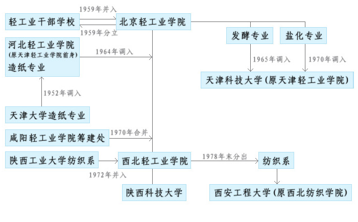
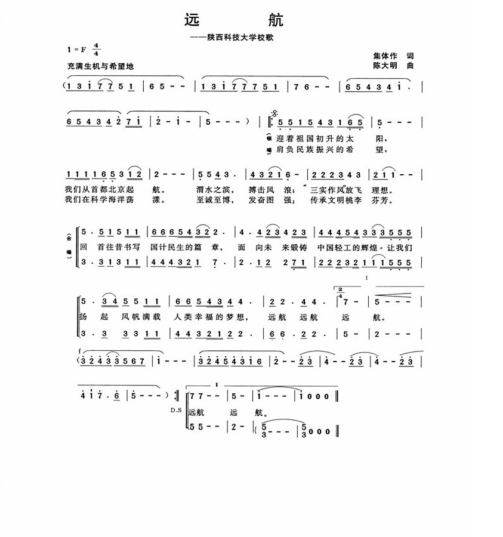
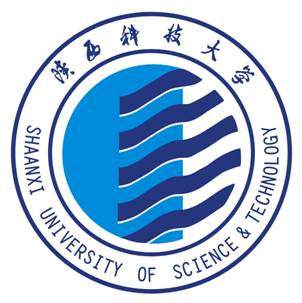
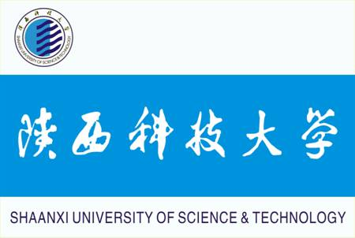

学校简介
陕西科技大学是我国西部地区唯一一所以轻工为特色的多科性大学，是国家“中西部高校基础能力建设工程”建设高校，是“十二五”期间陕西省重点建设的高水平大学，是陕西省“国内一流大学建设高校”，是陕西省人民政府与中国轻工业联合会、中国轻工集团公司共同建设的重点高校。学校创建于1958年，时名北京轻工业学院，是新中国第一所轻工高等学校；1970年迁至陕西咸阳，改名为西北轻工业学院；1978年被国务院确定为全国88所重点院校之一；1998年学校划转到陕西省，实行中央与地方共建、以地方管理为主的体制；2002年经教育部批准，更名为陕西科技大学；2006年学校主体东迁西安。
学校现有西安未央校区、太华路校区和咸阳校区三个校区，总面积2055亩，建筑面积129.6万平米。西安校区占地面积1590亩，规划合理、功能齐全、设施先进、环境优美，坐落于风景秀丽的灞河之滨、未央湖畔。学校有专任教师1200多人，具有高级专业技术职称的近600人；有全日制各类在校学生21000多人，其中博士、硕士研究生近3000人。图书馆藏书近200万册。
学校设有轻工科学与工程学院、材料科学与工程学院、环境科学与工程学院、食品与生物工程学院、机电工程学院、电气与控制工程学院、电子信息与人工智能学院、经济与管理学院、化学与化工学院、设计与艺术学院、文理学院、教育学院（继续教育学院、职业技术学院）、马克思主义学院和体育部等14个学院（部）。有博士后科研流动站3个，博士学位授权一级学科4个、二级学科19个，硕士学位授权一级学科18个、二级学科84个，本科专业59个，涉及工学、理学、管理学、文学、经济学、医学、艺术学、教育学等8大学科门类。有陕西省“国内一流大学建设高校”建设学科1个，省级优势学科6个，国家级、省部级重点实验室、重点研究基地和工程技术研究中心等31个，省级协同创新中心1个，省哲学社会科学特色建设学科1个，省级研究生联合培养示范工作站6个，校级院士工作室6个。2017年1月，材料科学学科进入ESI全球排名前1%，迈入国际一流学科行列。
学校始终将人才培养作为根本任务，不断提高教育教学质量。2011年入选教育部“卓越工程师计划”第二批试点高校，2017年入选教育部“互联网+中国制造2025”产教融合促进计划试点院校和陕西省首批深化创新创业教育改革示范高校。近年来，在国家级、省级教学项目中连创佳绩，整体水平居省属高校前列。荣获国家级教学成果二等奖3项，省部级教学成果奖54项；现有国家“万人计划”教学名师1人，省级教学名师19人；国家级特色专业建设点9个，省级特色专业建设点13个，陕西省名牌专业7个，工程教育专业认证专业4个；国家级本科专业综合改革试点项目1项、省级本科专业综合改革试点项目9项；国家级教学团队1个、省级教学团队24个；国家级精品课程4门、省级精品课程24门；国家级精品视频公开课程1门，国家级精品资源共享课程1门、省级精品资源共享课程50门；省级在线开放课程2门；国家级双语教学示范课程1门、省级双语教学示范课程2门；国家级实验教学示范中心1个，省级实验教学示范中心、省级虚拟仿真实验教学中心14个；国家级大学生校外实践教育基地1个，省级大学生校外实践教育基地、创新创业教育实践基地6个；省级人才培养模式创新实验区14个；省级创新创业改革试点学院2个；承担省部级教改项目53项。
学校高度重视科技创新，积极为经济社会发展服务。“十二五”以来，共承担各类纵向科研项目1753项，包括国家自然科学基金、国家社会科学基金、国家重点研发计划、陕西省重大重点项目等；获得科技成果奖励348项，省部级以上奖励129项，其中获得国家技术发明二等奖1项、国家科技进步二等奖2项、何梁何利基金“科学与技术创新奖”1项、教育部高等学校科学技术一等奖1项、陕西省科学技术一等奖6项、陕西省哲学社会科学优秀成果一等奖1项、中国轻工业联合会科学技术一等奖9项；出版著作288部，SCI三区以上收录论文1406篇，EI收录期刊论文1761篇；共获授权专利6146项。据国家知识产权局数据显示：截至2018年5月，在全国高校有效发明专利拥有量排名中，我校位列第31位，该项排名已连续8年进入全国高校50强，居省属高校第1位。创新产学研合作模式，先后成立了浙江（温州）轻工研究院、陕西知识产权运营研究中心，2007年陕西省人民政府依托学校成立了省级研究院——陕西农产品加工技术研究院，这些产业化平台注重解决行业关键性技术问题，为区域经济发展和行业技术进步发挥了积极作用。
学校坚持以人为本、德育为先、能力为重、全面发展的育人理念，大力推进文化传承创新，积极构建和谐校园。学校被团中央确定为全国50所、陕西省唯一一所普通高校基层团建试点单位，先后荣获“全国大学生心理咨询先进单位”“陕西高等学校辅导员队伍建设先进单位”“陕西省平安校园”“陕西省大学生暑期社会实践示范学校”等多项荣誉。辅导员队伍建设和网络思政工作成效显著，在全国高校辅导员年度人物评选、素质能力大赛、精品项目建设、易班应用等重大工作和活动中成绩优异，学校成为唯一一所蝉联全国高校辅导员素质能力大赛决赛一等奖的高校。科大学子在中国“互联网+”大学生创新创业大赛、“挑战杯”全国大学生课外学术科技作品竞赛、“创青春”全国大学生创业大赛、全国大学生电子设计竞赛、全国大学生数学建模竞赛、中国研究生创新实践系列大赛、中国青年志愿者服务项目大赛等国家级竞赛中屡获殊荣。积极拓宽就业渠道，完善就业创业服务体系，学生就业能力和质量显著提升。
在六十年的发展历程中，陕西科技大学历经“三次创业、两次搬迁、一次划转”的奋斗与辉煌，秉承以“自强不息、艰苦奋斗的创业精神，求实创新、锐意进取的科学精神和扎根西部、服务社会的奉献精神”为内涵的“三创两迁”精神，恪守“至诚至博”校训，培养了近15万名优秀人才，为国家建设和社会发展做出了重要贡献。
学校2014年、2018年被中共陕西省委教育工委授予“陕西高等学校先进基层党委”“陕西高等学校先进校级党委”称号；在5年一次的全省“五一”评选表彰活动中，成为唯一一所在2012年、2017年连续两次获得“陕西省先进集体”荣誉称号的高校。站在新的起点，陕西科技大学将高举中国特色社会主义伟大旗帜，以习近平新时代中国特色社会主义思想和党的十九大精神为指导，按照国家和陕西省“一流大学、一流学科”的建设要求，以立德树人为根本任务、学科建设为龙头、师资队伍建设为重点、深化改革为动力、党的建设为保证，深入推动学校内涵发展，不断提高教育教学质量和整体办学水平，为全面建成特色鲜明的高水平教学研究型大学努力奋斗！
（以上统计截至2019年4月）
西安校区地址：陕西省西安市未央大学园区 邮编：710021
咸阳校区地址：陕西省咸阳市人民西路49号 邮编：712081
太华路校区地址：陕西省西安市太华北路43号 邮编：710016
学校章程
陕西科技大学章程
(2014年9月17日经陕西省教育厅核准)
序 言
陕西科技大学是新中国第一所轻工高等院校，1958年创建于北京，时名北京轻工业学院；1970年迁至陕西咸阳，改名为西北轻工业学院，1978年被国务院确定为全国重点院校；1998年学校划转陕西省，2002年更名为陕西科技大学；2006年学校主体东迁西安；2012年陕西省政府与中国轻工业联合会、中国轻工集团公司签订协议共建陕西科技大学。学校是我国西部地区唯一的以轻工为特色的多科性大学，为国家“中西部高校基础能力建设工程”建设高校，被陕西省委、省政府确定为全省“重点建设的高水平大学”。
历经“三次创业、两次搬迁、一次划转”的奋斗与辉煌，陕西科技大学坚持扎根西部、自强不息，始终保持艰苦奋斗精神，以建设高水平有特色教学研究型大学为奋斗目标，遵循“教学为主、质量为本、突出特色、创新发展”的办学理念，注重实践、崇尚创新，以高素质应用型人才为培养目标，孕育出“专业基础厚实、工程训练扎实、思想作风朴实”的“三实”作风，培养了一大批为我国行业建设发展和区域经济腾飞做出重要贡献的杰出人才，在国内外轻工领域享有良好的学术声誉和社会声望。
为了发展学校教育事业，推进现代大学制度建设，依据《中华人民共和国教育法》、《中华人民共和国高等教育法》、《高等学校章程制定暂行办法》等相关法律法规和规章，制定本章程。
第一章总 则
第一条学校名称为陕西科技大学，简称“陕科大”；英文名称为Shaanxi University of Science ＆ Technology，简称“SUST”。
第二条学校法定注册地为陕西省西安市未央大学园区，设有未央校区、咸阳校区和太华路校区。互联网域名为http://www.sust.edu.cn
第三条学校为公办非营利性事业组织，具有独立法人资格，依法享有办学自主权，独立承担法律责任。
第四条学校坚持社会主义办学方向，全面贯彻党和国家的教育方针，致力于人才培养、科学研究、社会服务、文化传承创新。
第五条学校实行中国共产党陕西科技大学委员会（以下简称学校党委）领导下的校长负责制。
第六条校长是学校的法定代表人。
第七条学校实行校院（部）两级管理体制。
第二章 举办者与学校
第八条学校的举办者是陕西省人民政府。
第九条举办者享有下列权利：
（一）依法决定学校的设立、变更和撤并；
（二）依法对学校进行管理，指导学校事业科学发展；
（三）监督并组织评估学校的办学水平和教育质量；
（四）法律法规规定的其他权利。
第十条举办者的义务：
（一）依照国家有关规定确定学校的管理体制，支持学校依法自主办学、自主管理；
（二）支持学校依法履行职能，保证学校教育经费的稳定投入并逐步增长；
（三）依法保护学校的合法权益不受侵犯；
（四）支持学校开展人才培养、队伍建设、学科建设、科学研究等活动；
（五）法律法规规定的其他义务。
第十一条学校享有下列权利：
（一）面向社会依法自主办学，依照章程自主管理；
（二）自主制定人才培养方案，组织实施教育教学活动；
（三）制定招生方案，自主调节系科招生比例；
（四）根据学校实际需要，自主确定内部组织机构的设置和人员配备；
（五）按照国家有关规定，评聘教师和其他专业技术人员职务，调整工资及津贴分配；
（六）自主开展科学研究、技术开发和社会服务；
（七）依法自主开展与国（境）内外机构之间的科学技术文化交流与合作；
（八）对国有财产、受捐赠财产依法自主管理和使用；
（九）法律法规规定的其他权利。
第十二条学校应当承担如下义务：
（一）保障教育教学质量达到国家规定的标准；
（二）接受教育行政部门及其委托的其他机构对学校办学水平、教育教学质量的监督、评估和指导；
（三）依法维护受教育者、教职工的合法权益；
（四）建立健全财务管理制度，科学使用，严格管理学校经费，财务活动依法接受监督；
（五）开展多种形式的合作交流，积极为国家和区域经济社会发展服务；
（六）完善学校内部监督机制，实行校务公开，实施民主管理；
（七）积极改善教职工和学生的学习、工作和生活条件；
（八）履行法律规定的其他义务。
第三章 学校功能与教育形式
第十三条学校以人才培养为根本任务，坚持以人为本，崇尚学术自由，按照教育规律全面实施素质教育，积极开展教育教学、科学研究、社会服务和文化传承创新，保障人才培养质量达到国家规定的标准。
第十四条学校主要教育形式为全日制学历教育。以本科教育为主，积极发展研究生教育，根据社会需要和学校实际适度开展其他教育形式。学校的学科门类以工学为主，多学科协调发展。
第十五条根据国家相关规定、社会需求和办学实际，确定办学规模，制定招生章程。
第十六条学校以学科建设为引领，按照科学定位、分类建设的原则，依照相应程序，合理设置和调整学科专业，促进整体办学实力的提升。
第十七条对达到规定条件的学生颁发学历证书或学业证书，或出具学习证明。执行国家学位制度，依法对达到规定条件的学生授予相应的学士、硕士、博士学位。
第十八条学校建立健全质量保障体系，自觉接受社会监督，不断提高教育教学质量。
第四章 组织与结构
第一节 学校组织机构
第十九条学校根据需要设置组织机构，决定其职权职责配置。
第二十条学校党委是学校的领导核心，统一领导学校工作，支持校长依法独立行使职权。
学校党委的领导职责主要是：
（一）坚持社会主义办学方向，依靠全校师生员工推进学校的改革和发展，培养社会主义事业的建设者和接班人；
（二）领导学校的思想政治工作和德育工作；
（三）讨论决定学校改革发展稳定以及教学、科研、行政管理中的重大问题；
（四）讨论决定学校内部组织机构的设置，按照干部管理权限，负责干部的选拔、教育、培养、考核和监督；
（五）领导学校的工会、共青团、学生会等群众组织和教职工代表大会；
（六）做好统一战线工作。对民主党派在校内的基层组织实行政治领导，支持其按照各自的章程开展活动；
（七）保证以培养人才为中心的各项任务的完成。
第二十一条学校党委根据工作需要，设立相应工作机构，赋予其相应职责。
第二十二条学校党委实行民主集中制，遵循“集体领导、民主集中、个别酝酿、会议决定”的原则，凡属重大事项通过党委会集体讨论后作出决定。
第二十三条中国共产党陕西科技大学纪律检查委员会是学校的党内监督机构，在学校党委和上级纪委的领导下，维护党的章程和其他党内法规，检查党的路线、方针、政策和决议的执行情况，协助学校党委加强党风建设和组织协调反腐败工作，保障和促进学校各项事业健康发展。
第二十四条校长依法全面负责学校的教学、科学研究及其他行政管理工作。校长向教职工代表大会报告工作。
校长行使下列职权：
（一）拟订学校发展规划，制定具体规章制度和年度工作计划并组织实施；
（二）组织开展教学活动、科学研究、学科建设、师资队伍建设和国际合作与交流，部署协调全校行政工作；
（三）拟订校内组织机构的设置方案，根据有关规定和程序，推荐副校长人选，任免学校内部行政组织机构负责人；
（四）聘任与解聘教职工，对学生实施学籍管理；按照法律和学校规定对教职工和学生实施奖励或处分；
（五）拟订和执行年度经费预算方案，保护和管理学校资产，积极筹措办学经费，维护学校的合法权益；
（六）法律法规规定的其他职权。
第二十五条学校行政工作实行校长领导，副校长、总会计师分工负责、职能部门组织实施的工作机制。学校实行校务公开。
第二十六条校长办公会是校长行使职权的基本形式。校长或受校长委托的副校长主持校长办公会，组织实施校党委有关决定，讨论处理学校教学科研等重要问题及决定有关重要事项。
副校长根据分工主持召开专题会议，处理有关事项，向校长负责。
第二十七条学校设立行政职能部门，履行相应行政职能。
第二十八条学校设立公共服务单位，为教学、科研、管理提供服务支撑。
第二十九条学校设立的具有独立法人资格的单位，依法按照其章程运行和管理。
第三十条学校设立学术委员会。
学术委员会是学校学术事务的咨询、论证、审议和决策的最高机构，依照《高等学校学术委员会规程》开展工作。学术委员会成员由有较高学术成就的校内专家学者组成。
第三十一条学校设立学位评定委员会。
学位评定委员会是履行学校学位评定、授予等学位事务的决策机构，依照其章程开展工作。学位委员会成员由学校根据国务院学位委员会的有关规定聘任。
第三十二条学校设立专业技术职务聘任委员会。
学校专业技术职务聘任委员会是学校对教职工专业技术职务任职资格进行评审的机构，依据学校有关规定开展工作。
第三十三条学校设立教学指导委员会。
教学指导委员会对学校本科教学建设、改革和教学管理工作中的重要问题进行研讨、咨询、审议和监督。教学指导委员会由教学工作经验丰富的教师和教学管理人员组成。
第三十四条教职工代表大会是全体教职工行使民主权利、参与学校民主管理和监督、维护自身合法权益的基本形式。在学校党委领导下按照《学校教职工代表大会规定》和有关制度，履行职责，行使职权。
第三十五条工会是教职工代表大会的工作机构，承担教职工代表大会的相关职能，完成教职工大会委托的其他任务。
学校建立校院（部）两级工会组织。学校工会在校党委、上级工会组织领导下按照《中华人民共和国工会法》和《中国工会章程》开展工作，履行工会职责。维护教职工合法权益，组织教职工参与民主管理、民主监督，提高教职工的思想道德素质和科学文化素质。
第三十六条中国共产主义青年团陕西科技大学委员会在校党委和上级团组织的领导下，发挥思想政治教育、校园文化建设、维护学生合法权益、提高学生素质等方面的组织、引导作用。按照国家有关法律法规和共青团章程开展活动。
第三十七条学生代表大会是学生在学校领导下依法行使民主权利、参与学校民主管理的基本形式。
学生会是学生代表大会的执行机构和日常工作机构，依其章程开展活动。
第三十八条学校支持校内各民主党派组织及社会团体按照各自章程开展活动，参与学校的民主管理、民主监督。
第二节 学院（部）
第三十九条学院（部）是学校基层教学与科研组织，是人才培养、科学研究、学科建设、社会服务和国际交流的具体组织实施单位，在学校授权范围内实行自主管理。
第四十条学院（部）履行以下职责：
（一）根据自身发展目标，制订发展规划，并组织实施；
（二）根据需要，按照学校规定程序设置内部机构，并负责内部机构运行；
（三）制订并组织实施本单位学科专业建设、师资队伍建设、课程建设及教学计划；
（四）组织开展科学研究和学术活动；
（五）负责本单位教职员工与学生的教育与管理；
（六）负责本单位的资产和经费管理；
（七）学校赋予的其他职责。
第四十一条学校党委设立的学院（部）基层党组织按照《中国共产党普通高等学校基层组织工作条例》开展工作。
第四十二条学院（部）党政联席会议是学院（部）重要事项的决策和议事形式，由学院（部）党政领导班子成员参加。学院（部）实行院（部）务公开。
第四十三条学院（部）设立学术分委员会、学位评定分委员会、教学分委员会，在学校相应委员会的指导下开展工作。保障学术民主和学术自由。
第四十四条学院（部）设立工会分会组织，依据法律法规，在学校工会的指导下开展工作，行使职权。
第四十五条学院（部）建立教职工代表大会制度或教职工大会制度，保障本单位教职员工依法参与民主管理与民主监督。
第四十六条学院（部）设立的团组织，在校团委的指导下开展工作。
第五章 学 生
第四十七条学生是指被学校依法录取、取得入学资格，具有学校学籍的受教育者。
第四十八条学生除享有宪法、法律、法规及规章规定的权利外，在校期间还享有下列权利：
（一）参加学校教育教学计划安排的各项活动，公平使用学校公共教育资源；
（二）参加社会服务、勤工助学，在校内组织、参加学生团体及文娱体育等活动；
（三）取得符合学历及学位条件后的学历证书及学位证书；
（四）根据有关规定，申请国家和学校的奖学金、助学金及助学贷款；
（五）在学业成绩和品行上获得公正评价，公平获得各种奖励和荣誉称号；
（六）知悉学校发展及关系自身利益的重大事项；
（七）参与民主管理，对学校工作提出意见和建议；
（八）对学校给予的处分或者处理有异议，向学校学生申诉处理委员会、教育行政部门提出申诉；对学校、教职员工侵犯其人身权、财产权等合法权益，提出申诉或者依法提起诉讼；
（九）学校规定的其他权利。
第四十九条学生除履行宪法、法律、法规及规章规定的义务外，还应履行下列义务：
（一）努力学习，完成学业，完善人格；
（二）遵守学生行为规范，尊敬师长，养成良好的思想品德和行为习惯；
（三）珍惜和维护学校声誉，维护学校的秩序与利益；
（四）遵守学校规章制度；
（五）按规定缴纳学费及有关费用，履行获得资助所承诺的相关义务；
（六）爱护并合理使用教育设备和生活设施；
（七）学校规定的其他义务。
第五十条学校对于具有本校学籍，在规定的学习年限内修满规定学分，达到毕业要求的学生，准予毕业，颁发毕业证书；对符合学位授予条件者，授予相应的学位。
第五十一条学校对取得突出成绩的学生集体和个人给予表彰奖励；对违法、违纪学生给予相应的批评教育或纪律处分。
第五十二条学校鼓励和支持学生开展创新实践活动，鼓励学生参与教师的科研、企业的研发工作等，支持其参加社会实践、志愿服务和勤工助学等，对其就业创业进行指导服务。
第五十三条学校为学生提供心理健康教育、咨询、就业指导等服务，关心在学习生活中遇到特殊困难的学生，为其健康成长提供必要的帮助。
第五十四条学校建立学生权益保护机制，设立学生申诉处理委员会，维护学生合法权益。
第五十五条中外交换生、进修生及其他在校学习人员依照学校有关规定，享有相应权利，履行相应义务。
第六章 教职工
第五十六条学校教职工由教师、其他专业技术人员、管理人员和工勤人员（或职员）等组成。
第五十七条学校教职工除享有宪法、法律、法规以及规章规定的权利外，还享有下列权利：
（一）公平使用学校的公共资源、享受福利待遇；
（二）公平获得自身发展所需的相应工作机会和条件；
（三）在品德、能力和业绩等方面获得公正评价；
（四）公平获得各种奖励和荣誉称号；
（五）知悉学校改革发展以及关系切身利益的重大事项；
（六）参与民主管理，对学校工作提出意见和建议；
（七）就职务、福利待遇、评优评奖、纪律处分等事项表达异议和提出申诉；
（八）聘任合同规定的权利；
（九）学校规定的其他权利。
第五十八条学校教职工除履行宪法、法律、法规及规章规定的义务外，还应当履行下列义务：
（一）恪尽职守，勤勉工作；
（二）尊重和爱护学生；
（三）珍惜和维护学校声誉，维护学校的秩序与利益；
（四）遵守学校规章制度；
（五）聘任合同规定的义务；
（六）学校规定的其他义务。
第五十九条学校依法对教职工实行下列任用制度：
（一）教师的资格认证和职务聘任制度；
（二）其他专业技术人员的专业技术职务聘任制度；
（三）管理人员的聘任制度；
（四）工勤人员的聘任及劳动合同制度。
第六十条学校建立健全各类进修、培训制度，为教职员工提供事业发展的平台。
第六十一条学校实行人事聘任制、岗位目标责任制，对教职员工定期进行考核，考核结果作为对各类人员任用、晋升和奖惩的依据。
第六十二条学校对业绩突出的教职员工给予奖励，对违反规定的教职员工依法给予行政处分。
第六十三条学校设立劳动人事争议调解委员会，依法保障教职工的合法权益。
第六十四条学校按照有关政策，实行教职员工离退休制，维护离休、退休教职工的合法权益。
第七章 资产、经费和财务管理
第六十五条学校的资产包括固定资产、流动资产、对外投资、知识产权等无形资产以及依法认定为学校所有的其他权益。
第六十六条学校对拥有的资产享有法人财产权，依法自主管理和使用。
第六十七条学校经费来源主要包括财政拨款、事业收入和其他收入。学校积极拓展资金来源渠道，吸引社会资金，提高办学实力。
第六十八条学校实行“统一领导、集中核算、分级管理”的财务管理制度，建立健全经济责任制度，保证资金运行安全。按照国家和地方高等学校财务制度规定，科学合理使用经费，提高办学的经济效益。
第六十九条学校实行审计监督制度，建立有效的财务监督体系，保证资金运行安全。
第八章 校友、校友会和董事会
第七十条校友是指曾经在学校及其前身或分支机构接受过学历教育或非学历教育培训的学生；曾经在学校及其前身或分支机构工作过的教职工；学校授予名誉教授等荣誉的社会人士；学校聘请的客座教授、兼职教授和兼职研究生指导教师；获得学校校友会会员资格的其他人士。
第七十一条学校校友会是学校校友自愿组成的社会团体。学校校友会依法注册成立，依据国家有关规定及其章程开展活动。
第七十二条学校设立校友总会，支持校友成立具有地域、行业、届别等特点的校友分会，各校友分会作为校友总会的分支机构，接受校友总会的指导。
第七十三条校友是学校的使者，是学校声誉的代表，是学校的宝贵财富。校友应当珍惜学校的声誉。
第七十四条学校可设董事会，对学校的决策及重要工作提出意见和建议。
董事会的组成、运行、议事规则及组织章程另行制定。
第九章 校徽、校旗、校歌、校训、校庆日
第七十五条学校校徽包括徽志和徽章。学校徽志是双圆套圆形徽标，中间是由五条向上波浪和半圆相互交叉组合的图形，象征着学校团结、勤奋、严谨、求实、创新的精神；双圆环之间有“陕西科技大学”中文和英文字样。
学校徽章为教职员工和学生佩戴的题有校名的长方形证章。
第七十六条学校校旗为天蓝色长方形旗帜，中央印有校名，左上角配以学校徽志。
第七十七条学校校歌为《远航》。
第七十八条学校校训为“至诚至博”。
第七十九条学校校庆日为每年6月26日。
第十章 附 则
第八十条学校章程是学校的基本规范，校内其他规章制度的制定、修订均应符合本章程的精神，不得与本章程相抵触。
第八十一条本章程的修订由校长提出，提交教职工代表大会讨论，经校长办公会审议，由学校党委会审定，报陕西省教育厅核准后，学校发布。
第八十二条本章程由学校党委会负责解释。
第八十三条本章程自发布之日起施行。
历史沿革

学校标识
大学精神
“三创两迁”精神
自强不息、艰苦奋斗的创业精神
求实创新、锐意进取的科学精神
扎根西部、服务社会的奉献精神
校训
至诚至博
校训是一个学校的灵魂。校训体现了学校的办学传统，代表着校园文化和教育理念，是人文精神的高度凝练，是学校历史和文化的积淀。
2002年，学校在结合办学特色、广泛征求师生意见的基础上，形成了“至诚至博”的校训。“至诚”是指对自己，要诚实；对他人，要诚恳；对国家和社会，要诚信。唯诚信，信而有德，才有对国家和事业的忠诚，才能爱岗敬业，才可能善作善成。“至博”是指博学、博思、博大。“至诚至博”不但体现了中国优秀传统文化和时代精神的有机结合，更贴合了社会主义精神文明建设的要求和方向。诚实有德、博学有才，又红又专，德才兼备。
“至诚至博”自确立以来，既是对之前44年办学精神的高度凝练总结，也为其后16年学校的发展历程所丰富、所印证。“至诚至博”的校训，凝结着学校艰难曲折的办学历程，承载着科大人忠诚党的教育事业的历史印记，陕科大每一位师生都自觉把“至诚至博”作为团结奋斗、拼搏创新的精神旗帜，在推动学校内涵发展，实现追赶超越的征程中汲取不忘初心、继续前进的精神力量。
校歌

校徽

校旗
